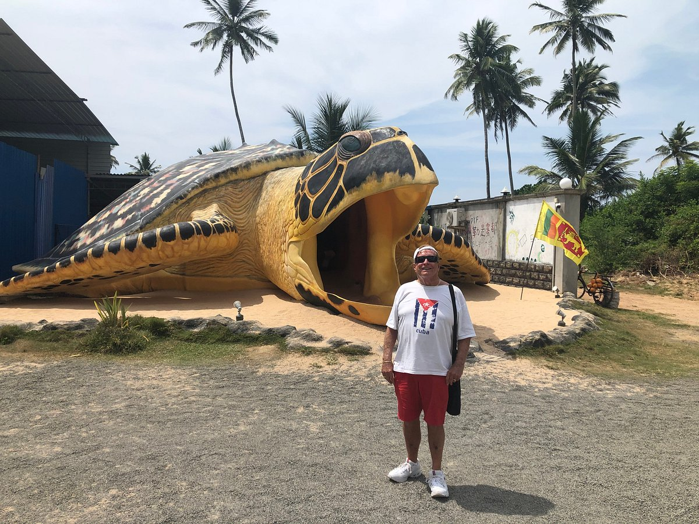

|
Hikkaduwa, located on the southwestern coast of Sri Lanka, is known for its beautiful beaches and diverse marine life.One of the popular attractions in Hikkaduwa is the turtle hatcheries, which are conservation projects dedicated to protecting and preserving sea turtles.
|
|  |
The hatcheries serve several purposes. Firstly, they help protect turtle eggs from predation and human activities, such as poaching or accidental damage.
The eggs are carefully collected from the nesting sites and relocated to the hatcheries, where they are placed in secure enclosures to ensure their safety.
|
 |
Once the eggs hatch, the baby turtles are kept in tanks or pools until they are strong and healthy enough to be released into the ocean.
This period allows them to grow and develop their natural abilities, increasing their chances of survival in the wild.
|
 |
It's important to note that while turtle hatcheries play a significant role in turtle conservation efforts, there are debates and concerns regarding their practices.
Some argue that hatcheries can disrupt natural nesting patterns and may not provide the best long-term conservation solutions.
|